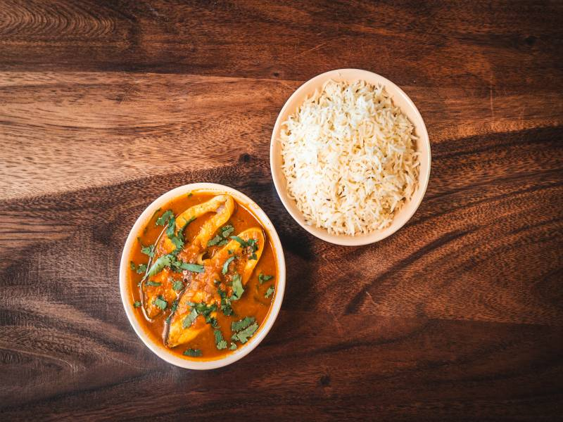

18 Sep
Member breakfast
Meet new neighbors and share what your business needs next.

On the calendar
18 Sep
Meet new neighbors and share what your business needs next.
26 Sep
An afternoon of local food, makers, and community stories.
Around Kansanga
Kampala, Uganda
--°C
Loading current conditions...
Member spotlight
Loading member spotlights...